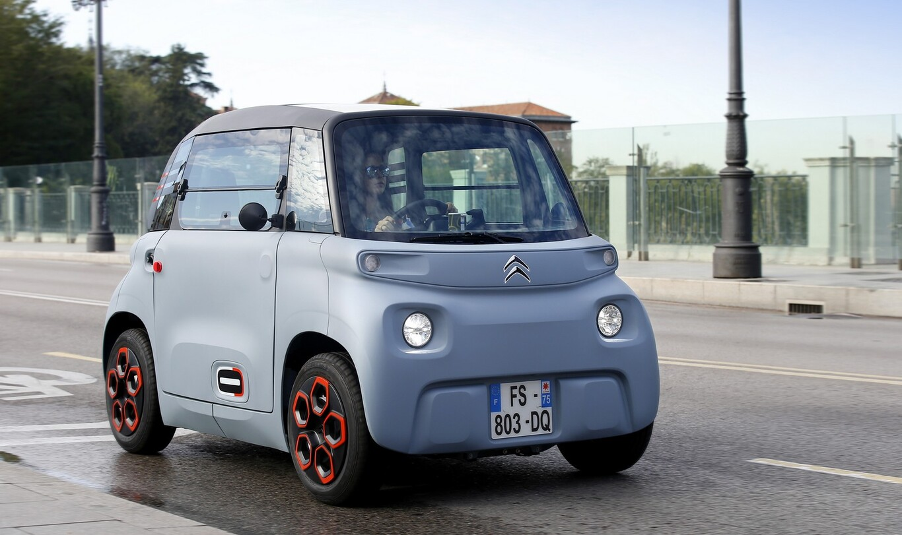

Citroën AMI, primeras impresiones: un objeto de movilidad 100% eléctrico al que no se puede llamar coche, que irrumpe con sus propias reglas
Objeto de movilidad. Así define Citroën su nuevo vehículo eléctrico, el Citroën Ami. Un cuadriciclo ligero creado para que cualquier conductor a partir de los 16 años pueda moverse por la ciudad sin miedo a restricciones. Con una autonomía de hasta 75 km –en condiciones ideales- el Ami puede suponer una punta de lanza acerca de la movilidad del futuro, sobre todo en las grandes urbes.
De momento solo disponible en Francia, lo hemos podido probar por las calles de Madrid y en el escenario menos amable posible para un vehículo de estas características: en medio de una ciclogénesis explosiva. Es decir, mal tiempo. Muy malo.
¿Qué es el Citroën Ami?
Para empezar hay que tener claro lo que no es. No es un coche. Tampoco es un microcoche. Ante la falta de rivales directos con los que compararlo, la firma francesa deja claro que lo que ha diseñado es un ‘objeto de movilidad’.
Descendiente directo de Ami ONE Concept presentado en el Salón de Ginebra en marzo de 2019, se trata de un cuadriciclo ligero cuyo nombre viene de la palabra ‘amigo’ en francés. También nos recuerda al vehículo familiar que se fabricó entre 1961 y 1979: el Citroën Ami 6, y posteriormente Ami 8.
Podríamos encontrar propuestas similares como el Renault Twizy o más reciente SEAT Minimó, aunque este último tiene una autonomía de hasta 100 km.
Su diseño alude a lo amigable, efectivamente, y nos transmite la sensación de estar frente a un juguete. El Ami cuenta con una estructura tubular metálica y un cuerpo a base de policarbonato. Al tacto es como un plástico semi rígido, y por dentro de ven las barras estructurales.
Ofrece una visibilidad de casi 360 grados, dando la sensación de circular en el interior de una burbuja. Pesa 471 kg con la batería incluida y tiene unas medidas de 2,40 m de longitud, 1,39 m de anchura y 1,52 m de altura. Para hacernos una idea, es un poco más grande que el Renault Twizy (2,34 metros de largo) y un metro más recogido que el Citroën C-Zero (gemelo del Mitsubishi i MIEV y del Peugeot i0n).
Una de las principales características de este cuadriciclo es que es totalmente simétrico. Es decir, es igual por delante y por detrás, por lo que en parado, a primera vista no sabes hacia qué dirección va. Esto responde a una cuestión de ahorro de costes: no tienen que añadir componentes diferentes en cada parte, reduciendo el número a menos de 250 piezas.
De hecho es tan ‘simple’ que los kit de personalización vienen en cajas de cartón que el mismo cliente se lleva a casa y monta él mismo, desde el salpicadero hasta las llantas. Y prometen que es muy fácil hacerlo, un juego de niños.
Una batería de iones de litio 5,5 kWh le dan al Ami una autonomía de hasta 75 km -en condiciones ideales-. Se puede cargar a 220 V a través de un enchufe estándar. El tiempo de carga es de tres horas.
¿Y qué hay de la velocidad máxima? Su motor de 6 kW le permite alcanzar una velocidad de 45 Km/h, por lo que no puede circular por autopistas o autovías. Su uso es puramente urbano, o de pequeñas distancias.
Uno de los principales atractivos es que, al ser un cuadriciclo, se puede conducir a partir de los 15 años con el permiso de ciclomotor (clase AM del carnet de conducir: motores de menos de 50 cc.).
Al estilo de las marcas Ligier o Aixam.
En Francia, el primer mercado al que ha llegado, un 42 % del público objetivo corresponde a una franja de edad de 15-16 años, y ha tenido su hueco incluso en el entorno rural, según la firma gala. Allí ya ha recibido en torno a 2.000 pedidos desde que se abrieran en el mes de julio.
¿Con qué tecnología cuenta? Una de las premisas del Ami es que es un vehículo que puede conducir todo el mundo de forma intuitiva. De hecho, el único equipamiento tecnológico que encontrarás será tu propio smartphone y un altavoz Bluetooh para amenizar el viaje.
Un soporte ubicado en el salpicadero permite colocar –y enchufar- el teléfono móvil para poder usar el navegador. Y eso es todo.
Al volante del Citroën Ami
La primera que te subes a bordo del Ami da la sensación de ir montada en una burbuja, o un submarino. Su techo panorámico y sus grandes ventanas longitudinales permiten una vista casi completa de lo que hay alrededor, siempre y cuando no esté diluviando, como ocurrió durante la presentación.
Y es que esa mañana en Madrid ocurrió un milagro: llovió. Llovió mucho, muchísimo. A eso se le unió un aviso amarillo por viento; el escenario menos ideal para un vehículo de estas características.
A pesar de sus medidas contenidas, el interior sorprende por su enorme habitabilidad. El único asiento que se puede regular longitudinalmente es el del conductor, y aun así queda un gran espacio para las piernas.
Por su parte, el asiento del copiloto queda ligeramente más retrasado, otorgando hueco más que de sobra para usar el porta maletas ubicado en la parte delantera (recordemos que no tiene maletero. Y que no es un coche).
En la parte delantera del salpicadero encontraremos grandes huecos portaobjetos al estilo de los bloques LEGO, y que se pueden personalizar con distintos colores.
Como guiño al emblemático Citroën 2 CV, los cristales laterales se abren basculando de forma manual hacia arriba. Por otra parte, las puertas, a pesar de ser totalmente idénticas en ambos lados, en el lado del conductor la apertura es inversa, mientras que en el lado del pasajero la apertura es la clásica.
Para poder abrir desde el interior habrá que tirar fuertemente de unas cintas de tela, y para regular los pequeños espejos retrovisores –al estilo de una motocicleta- bastará con sacar la mano por la ventanilla y hacerlo tú mismo.
¡Hora de ponernos en marcha! La puesta en marcha es bien sencilla: basta con meter la llave en el contacto, girarla, pisar el pedal de freno y bajar la palanca del freno de mano. Eso sí, para encontrar las marchas (solo tiene tres, pues es automático) habrá que buscar en el piso del vehículo, entre la puerta y el asiento del conductor.
Una vez en marcha es fácil acostumbrarte al acelerador, y hay que decir que el pequeño objeto de movilidad sale con bastante alegría desde parado. Claro que en seguida alcanzas la velocidad máxima de 45 km/h.
El Ami tiene un radio de giro de 7,2 metros, y no tiene dirección asistida, ABS o un airbag. A pesar de ello es fácil callejear con él, aunque los asientos, apenas acolchados y bastante rígidos, son un recordatorio de la cantidad de minutos que llevas al volante.
No cuenta con aire acondicionado pero sí con sistema de ventilación y calefacción, que se reduce a un botón que, al pulsarlo, suena como un secador de pelo a gran volumen. Por desgracia, el día que nos tocó hizo necesario el uso intensivo de la calefacción para evitar que los cristales se empañaran.
Es más que probable que la ruta en un día soleado hubiera sido más placentera, pero la tromba de agua que cayó empezó a inundar algunas calles e hizo que fuera casi misión imposible tener visibilidad en las maniobras.
El reducido tamaño de los espejos y que los cristales empezaran a empañarse sin remedio dificultaron realizar algunos tramos con soltura, pero a pesar de ello el Ami respondió bastante bien.
No obstante, uno de los puntos que la firma gala tendrá que mejorar es el de la estanqueidad: la lluvia consiguió no solo entrar al habitáculo a través de la parte superior de las puertas, sino también a través del compartimento delantero del copiloto destinado al equipaje.
El piso del vehículo acabó bastante mojado al final de la ruta. En cuanto a la autonomía, empezamos la ruta con la batería casi cargada y 65 km de autonomía; a pesar del uso extensivo de la calefacción y de llevarlo en algunos trayectos a su velocidad máxima, aún quedaba poco más de la mitad al término de la prueba, que duró poco más de hora y media.
En resumen: si buscas un coche eléctrico, el Ami no es para ti. Pero si lo que quieres es poder moverte por la ciudad es trayectos cortos y sin preocuparte de las zonas restringidas, puede ser una opción viable. Y lleva etiqueta CERO.
Precios del Citroën Ami
A pesar de que el Ami se venderá mayoritariamente de forma online, algunos concesionarios también lo tendrán, así como FNAC y espacios Citroën. Las entregas empiezan en marzo, pero ya se puede configurar.
Su precio parte de los 6.900 euros sin ayudas con acabado básico y la posibilidad de acogerse al Plan MOVES 2 de ayudas a la compra, que podría rebajar el precio en 600 euros.
Asimismo se pueden elegir otras cuatro variantes: dos personalizables con pack decorativo (+ 400 euros), acabado Pop (7.800 euros) y acabado Vibe (8.260 euros), con pasos de rueda protegidos, alerón trasero, llantas especiales o barras de techo.
Además de la posibilidad de compra, el Ami se podrá alquilar por minutos o meses, y la marca ya está estudiando otras propuestas como:
- Alquiler de larga duración: 19,99 €/mes (versión AMI AMI; LLD 48 meses, entrada 2.644 €, descuento ecológico de 900 € incluido en Francia). Para los que necesiten el vehículo de manera permanente, particulares o profesionales, como primer, segundo o tercer vehículo del hogar.
- Carsharing: a partir de 0,26 €/min (oferta Free2Move para abonados 9,90 € al mes sin necesidad de permanencia), en Francia. Cabe destacar que Free2Move es el único operador de carsharing de vehículos urbanos en servicio libre que permite el alquiler de corta duración a partir de los 16 años. Los analistas estiman que, en 2030, 1 de cada 3 km se cubrirá en modalidad de carsharing.
Un cambio de paradigma en la movilidad, donde el coche pierde cada vez más espacio
Está claro que el Citroën Ami es disruptivo en términos de movilidad. Sus características –acristalado, de fácil uso y 100 % eléctrico- lo hacen perfecto para el carsharing, incluso para que los turistas conozcan los entresijos de una gran ciudad sin preocuparse de las restricciones.
El hecho de que la marca francesa lo haya descrito como un 'objeto de movilidad' para trayectos cortos vaticina lo que será la movilidad en las grandes ciudades, donde al coche se le quita cada vez más espacio.
En este escenario, hay dos ciudades que anticipan la muerte del coche en la gran ciudad: París y Barcelona. La socialista Anne Hidalgo, reelegida alcaldesa de París recientemente, quiere eliminar el 72 % de las plazas de aparcamiento en la ciudad.
De acuerdo a un estudio de 2019 realizado por Atelier Parisien d'Urbanisme y citado por Forbes, hay 83.500 espacios para aparcar en la calle en París; Hidalgo planea eliminar 60.000 de ellos.
Por su parte, la alcaldesa de Barcelona, Ada Colau, también ha emprendido medidas para priorizar las zonas peatonales y los carriles bici en la Ciudad Condal. Así, el área de aparcamiento regulado (la de pago) se ampliará durante los próximos meses en 9.558 plazas nuevas de estacionamiento de coches para priorizar el aparcamiento para residentes.
En la actualidad hay 55.905 plazas de aparcamiento no regulado en Barcelona, así que dentro de poco habrá casi 10.000 menos.
Si a esto le sumamos las restricciones de acceso al centro de las grandes ciudades y un incremento del coche compartido, el cóctel está servido. Y el principal ingrediente recae en comprar movilidad por un tiempo determinado.
Por ejemplo, el fabricante chino Lynk & Co aterrizó en Europa el año pasado autodefiniéndose como la marca de coches para los que no quieren coches, y en línea con su colega Volvo, apunta a la suscripción más que a la compra.
De hecho la llegada a Europa de esta start-up propiedad del gigante chino Geely es disruptiva: lanzará su SUV híbrido bajo un modelo de suscripción de 500 euros al mes que puedes abonar tú solo, o compartir con otros usuarios.
Con Lynk & Co el usuario puede inscribirse para alquilar un vehículo de la irma por una tarifa mensual única que incluye todo excepto el combustible. Sin embargo, también puede registrarse como "miembro gratuito", obtener acceso a los vehículos de otras personas y pagar únicamente cuando quiera usarlos, aunque el 'propietario' tendrá acceso prioritario, claro.
Estos 500 euros mensuales se pueden abonar de forma individual, si no te interesa compartir tu coche, o bien repartir la cuota entre todas las personas que deseen conducirlo, ya sean familiares, amigos, o miembros del club.
En resumidas cuentas, el hecho de que Citroën haya presentado un objeto de movilidad y no un coche nos da una pista de hacia dónde vamos.